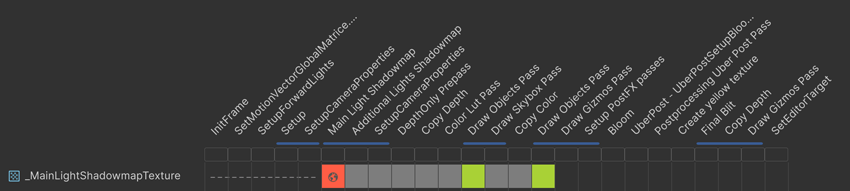

To analyze a render graph, use the Render Graph Viewer window.
The Render Graph Viewer window displays a render graph, which is the optimized sequence of render passes the Universal Render PipelineA series of operations that take the contents of a Scene, and displays them on a screen. Unity lets you choose from pre-built render pipelines, or write your own. More info
See in Glossary (URP) steps through each frame. The Render Graph Viewer displays both built-in render passes and any custom render passes you create.
For more information about the Render Graph Viewer window, refer to Render Graph Viewer window reference.
You can also use the following windows to analyze a render graph:
Go to Window > Analysis > Render Graph Viewer.
The Render Graph Viewer window displays the render graph for the active cameraA component which creates an image of a particular viewpoint in your scene. The output is either drawn to the screen or captured as a texture. More info
See in Glossary by default. To select another camera, use the dropdown in the toolbarA row of buttons and basic controls at the top of the Unity Editor that allows you to interact with the Editor in various ways (e.g. scaling, translation). More info
See in Glossary.
To connect the Render Graph Viewer window to a build, enable Development BuildA development build includes debug symbols and enables the Profiler. More info
See in Glossary in the Build ProfilesA set of customizable configuration settings to use when creating a build for your target platform. More info
See in Glossary window when you build the project. If you build for WebGLA JavaScript API that renders 2D and 3D graphics in a web browser. The Unity Web build option allows Unity to publish content as JavaScript programs which use HTML5 technologies and the WebGL rendering API to run Unity content in a web browser. More info
See in Glossary or Universal Windows Platform (UWP), enable both Development Build and Autoconnect Profiler.
After you build your project, follow these steps:
Your build appears in the Local section only if the build is running.
You can use the resource access blocks next to a resource name to check how the render passes use the resource.

In this example, the _MainLightShadowmapTexture_ texture goes through the following stages:
During the first five render passes between InitFrame and SetupCameraProperties, the texture doesn’t exist. The resource access blocks are dotted lines.
The Main Light Shadowmap render pass creates the texture as a global texture, and has write-only access to it. The resource access block is red. For more information about global textures, refer to Transfer textures between passes.
The blue merge bar below Main Light Shadowmap means URP merged Main Light Shadowmap, Additional Lights Shadowmap and SetupCameraProperties into a single render pass.
The next five render passes don’t have access to the texture. The resource access blocks are gray.
The first Draw Objects render pass has read-only access to the texture. The resource access block is green.
The next two render passes don’t have access to the texture. The resource access blocks are gray.
The second Draw Objects render pass has read-only access to the texture. The resource access block is green.
Unity destroys the texture, because it’s no longer needed. The resource access blocks are blank.
To check the details of a render pass, for example to find out why it’s not a native render pass or a merged pass, do either of the following:
For more information about displaying details of a render pass, refer to Render Graph Viewer window reference.